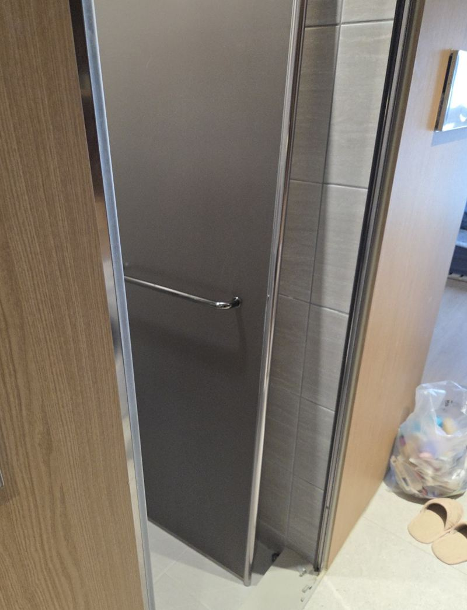
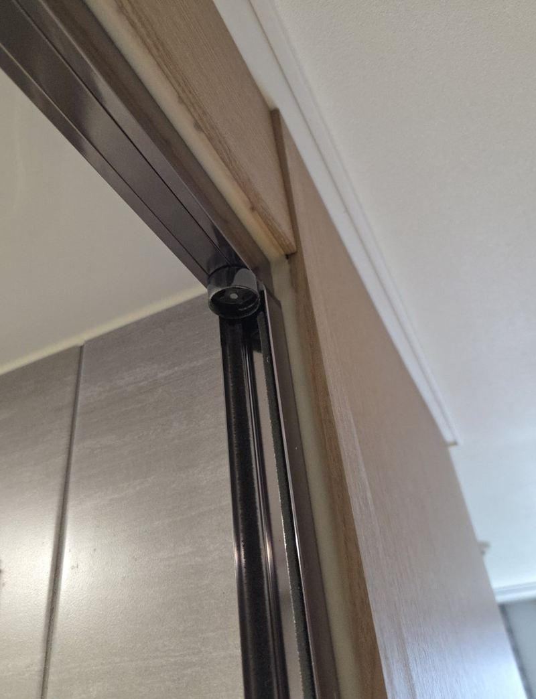
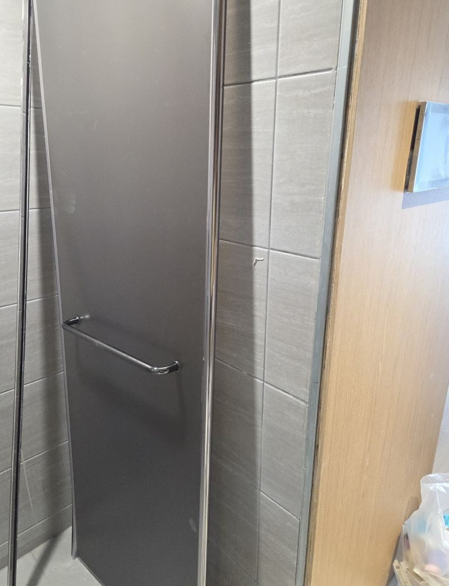
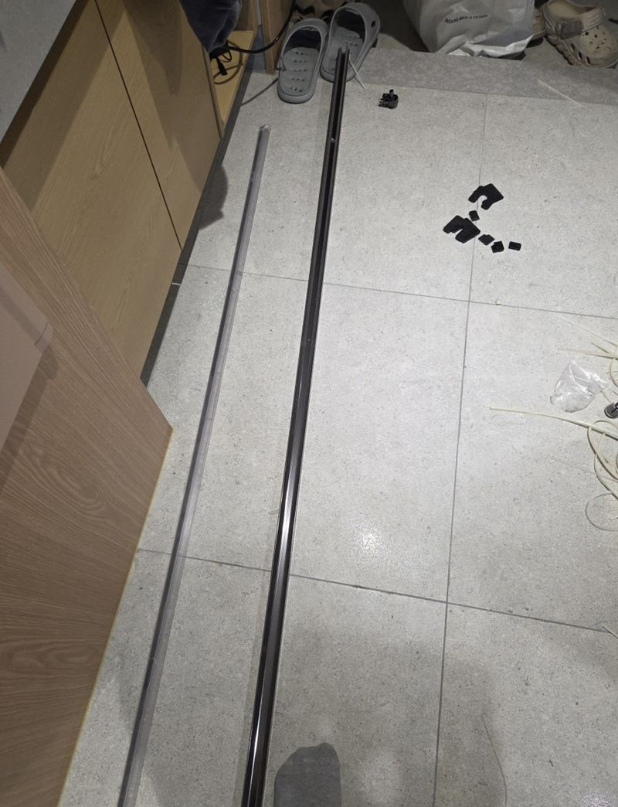
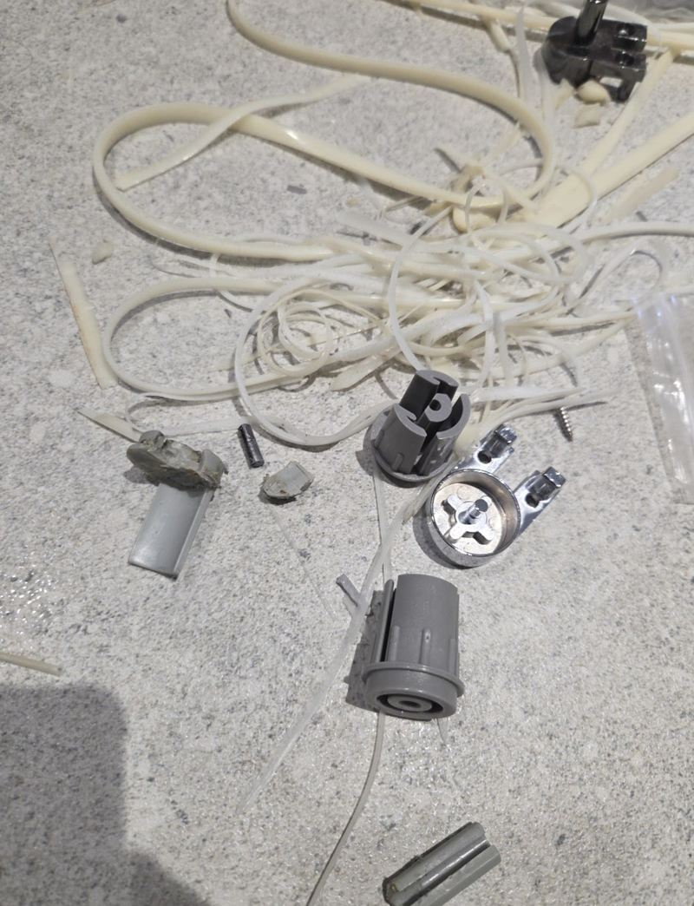
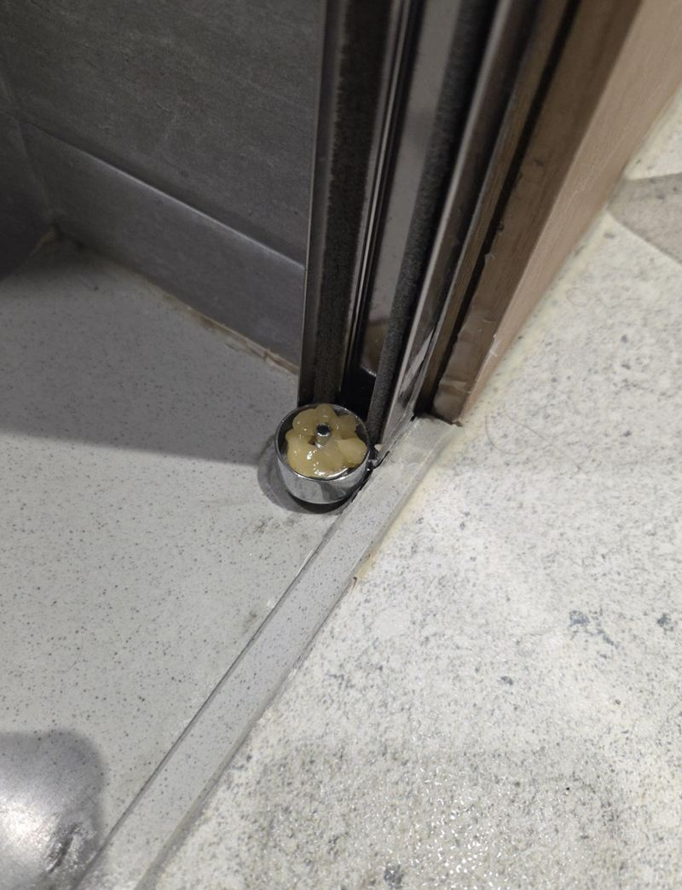
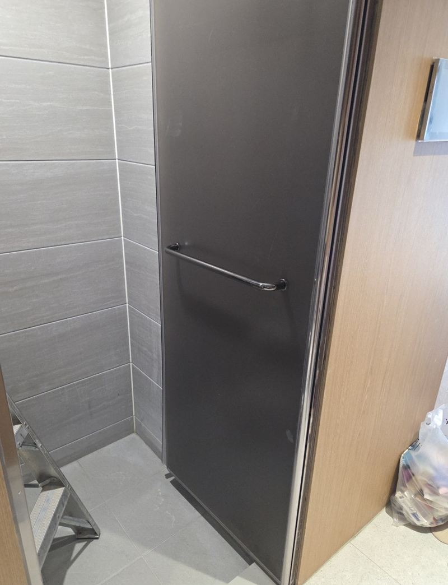

금천 욕실문 A타입 B타입 힌지 차이와 교체 방법

 교체 전교체 후
교체 전교체 후← 밀어서 전후 비교 →
가산동 기숙사 욕실의 유리문이 한쪽으로 기울어 제대로 닫히지 않는다는 연락이었어요. 열어 보니 문 아래 힌지가 부러져 문이 거의 떨어진 상태였어요. 같은 방식의 힌지로 바꿔 원래 쓰던 느낌은 살리고, 아래쪽을 보강해 다시 처지지 않게 했어요.
| 현장 | 서울 금천 가산동 기숙사 욕실 |
|---|---|
| 증상 | 유리문 기울어짐, 하단 힌지 파손, 여닫을 때 큰 흔들림 |
| 한 일 | 실리콘 제거 → 문틀 탈거 → 기존 힌지 분리 → 같은 타입 힌지 → 문틀 재설치 → 하부 보강 |
| 구조 특징 | 유리문이 살짝 떠 있어 무게가 힌지에 몰리는 형태 |
욕실 유리문 힌지가 부러지는 이유
유리문은 생각보다 무거워요. 그 무게를 위아래 힌지 두 개가 받는데, 이 기숙사 문은 바닥에서 살짝 떠 있는 구조라 아래 힌지에 힘이 더 몰렸어요. 하루에도 여러 번 여닫으면 그 힘이 쌓여 금속이 피로해지고 결국 부러져요. 한쪽이 부러지면 남은 힌지에도 무리가 가서 빨리 손보는 게 좋아요.


A타입과 B타입, 무엇이 다를까
욕실 힌지는 모양과 결합 방식에 따라 타입이 나뉘어요. 문틀에 박히는 위치, 나사 구멍 간격, 문을 잡는 방식이 달라서 다른 타입을 끼우면 구멍이 안 맞거나 문 높이가 달라져요. 그래서 부러진 힌지를 먼저 떼어 와 같은 타입을 맞추는 게 첫 단계예요.
| 확인할 것 | 이유 |
|---|---|
| 힌지 모양·크기 | 문틀 홈에 들어가는지 |
| 나사 구멍 위치 | 기존 구멍을 그대로 쓸 수 있는지 |
| 여는 방향 | 왼쪽·오른쪽 열림에 맞는지 |
힌지를 바꾸려면 문틀부터
이 구조는 힌지가 문틀 안쪽에 물려 있어서 문틀을 빼야 힌지에 손이 닿아요. 둘레 실리콘을 걷고 문틀을 분리한 뒤, 부러진 힌지를 빼고 새 힌지를 위아래 균형을 맞춰 달았어요.


문틀을 다시 세우고 아래쪽을 보강해 문 무게가 한 점에 몰리지 않게 했어요. 여러 번 여닫으며 기울어짐과 흔들림이 없는지 확인하고 실리콘으로 마감했어요.


욕실 유리문, 이럴 때 힌지를 보세요
- 문이 아래쪽으로 처져요힌지가 휘었거나 나사가 풀리기 시작한 거예요.
- 닫을 때 바닥이나 턱에 긁혀요힌지 높이가 내려앉은 신호예요.
- 문을 흔들면 딸깍거려요힌지 안쪽이 마모됐을 수 있어요.
- 기숙사·원룸처럼 사용자가 많아요여닫는 횟수가 많아 점검 주기를 짧게 잡는 게 좋아요.
유리문 힌지, 오래 쓰는 법
- 문을 세게 밀어 닫지 않기끝까지 밀어붙이면 힌지에 충격이 쌓여요.
- 문에 수건을 걸지 않기젖은 수건 무게가 한쪽 힌지에 계속 실려요.
- 처지기 시작하면 바로 점검조정으로 잡히는 시기에 손보면 교체까지 안 갈 수 있어요.
욕실 힌지 교체 질문
힌지만 사서 직접 갈 수 있나요?
문틀을 떼야 하는 구조가 많아서 혼자 하면 유리문이 떨어질 위험이 있어요. 유리는 무거워서 두 사람이 다루는 게 안전해요.
타입을 모르면 어떻게 하나요?
힌지 부분을 가까이 찍어 보내 주시면 맞는 타입을 찾아 준비해 가요.
유리에 금이 갔으면 유리도 바꿔야 하나요?
금 간 강화유리는 갑자기 깨질 수 있어서 교체를 권해요. 크기를 재서 맞춰 제작해요.
여러 호실을 한 번에 점검할 수 있나요?
기숙사·원룸 건물은 호실별로 상태를 보고 한 번에 처리할 수 있어요.
실리콘은 다시 해 주나요?
문틀을 떼면서 걷은 실리콘은 설치 후 새로 쏴서 마감해요.
나무 욕실문 경첩도 같은 원리인가요?
나무 문은 경첩 모양이 달라요. 나사 구멍이 헐거우면 보강해서 다시 다는 방법도 있어요.
힌지 교체 후 문이 다시 기울면요?
보통은 하부 보강까지 하면 버텨요. 문틀이 틀어진 경우라면 문틀 수평부터 다시 잡아요.
다른 방문·욕실문 현장
기울어진 문 전체와 힌지 부분을 가까이 찍어 보내 주세요.
전화 상담 010-4517-9872